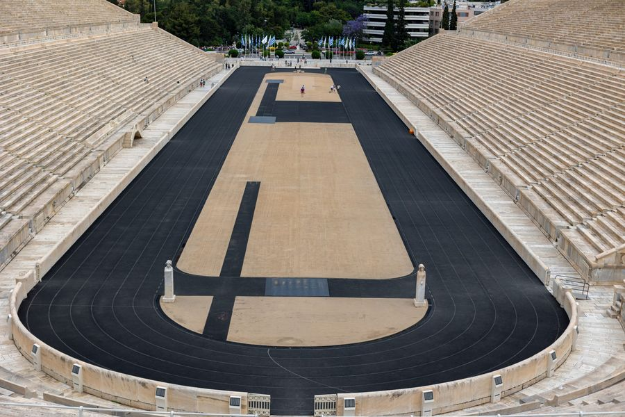

メキシコで賭けをする青少年が90万人超、7％にギャンブル問題México tiene más de 900 mil adolescentes que apuestan; 7% presenta problemas de juegoデジタルプラットフォームが常時利用可能であることと、スポーツにおけるその広告が、未成年者の間でこの現象を後押しした。
メキシコで賭けをする青少年が90万人超、7％にギャンブル問題México tiene más de 900 mil adolescentes que apuestan; 7% presenta problemas de juegoデジタルプラットフォームが常時利用可能であることと、スポーツにおけるその広告が、未成年者の間でこの現象を後押しした。 WHO、鳥インフルエンザによる世界初の死亡を報告、米ワシントンで発生La OMS reporta primera muerte en el mundo por gripe aviar; ocurrió en Washington, EU保健当局は、米国におけるインフルエンザA（H5）ウイルスのヒトからヒトへの感染を確認しておらず、孤立した症例のみだとしている。
WHO、鳥インフルエンザによる世界初の死亡を報告、米ワシントンで発生La OMS reporta primera muerte en el mundo por gripe aviar; ocurrió en Washington, EU保健当局は、米国におけるインフルエンザA（H5）ウイルスのヒトからヒトへの感染を確認しておらず、孤立した症例のみだとしている。 金、銀、それともプラチナ：2027年に投資の可能性を秘めた貴金属は？Oro, plata o platino: ¿Qué metales preciosos tienen potencial de inversión para 2027?2027年に貴金属に投資する価値はあるか。来年の価格予測と最良の投資方法を確認しよう。
金、銀、それともプラチナ：2027年に投資の可能性を秘めた貴金属は？Oro, plata o platino: ¿Qué metales preciosos tienen potencial de inversión para 2027?2027年に貴金属に投資する価値はあるか。来年の価格予測と最良の投資方法を確認しよう。 メキシコ市検察庁、UNAM入学試験の不正で3人目を逮捕La Fiscalía de CdMx detiene a tercera persona por fraude en examen de ingreso a UNAMヘレン「N」容疑者は、志願者に代わって同大学の学士課程に入学するための試験に解答したとされる。
メキシコ市検察庁、UNAM入学試験の不正で3人目を逮捕La Fiscalía de CdMx detiene a tercera persona por fraude en examen de ingreso a UNAMヘレン「N」容疑者は、志願者に代わって同大学の学士課程に入学するための試験に解答したとされる。 メキシコ市、グアダルーペの聖母大聖堂近くでの乳児遺棄で男を逮捕Un hombre es detenido por abandono de bebé cerca de la Basílica de Guadalupe, en CdMx遺棄の容疑者は検察官の前に引き渡され、検察官がその法的地位を決定する。
メキシコ市、グアダルーペの聖母大聖堂近くでの乳児遺棄で男を逮捕Un hombre es detenido por abandono de bebé cerca de la Basílica de Guadalupe, en CdMx遺棄の容疑者は検察官の前に引き渡され、検察官がその法的地位を決定する。 シェインバウム氏、チアパスのコーヒー農家を支持：「ネスレは正当な額を支払わなければならない」Sheinbaum respalda a cafeticultores de Chiapas: "Nestlé tiene que pagar lo justo"行政府の長は、収穫物に対するより良い支払いを求めるチアパスのコーヒー農家を農業省が支援すると発表した。
シェインバウム氏、チアパスのコーヒー農家を支持：「ネスレは正当な額を支払わなければならない」Sheinbaum respalda a cafeticultores de Chiapas: "Nestlé tiene que pagar lo justo"行政府の長は、収穫物に対するより良い支払いを求めるチアパスのコーヒー農家を農業省が支援すると発表した。 「金の雄鶏」を失って20年、バレンティン・エリサルデ殺害事件の新たな詳細が浮上A 20 años sin el Gallo de Oro, surgen nuevos detalles del crimen de Valentín Elizalde最後のコンサートで「チャリーノ」サンチェスのときのような紙のメモ、裏切りについて彼に警告した占い師、そして隠された鑑定は、新たな詳細の一部である。
「金の雄鶏」を失って20年、バレンティン・エリサルデ殺害事件の新たな詳細が浮上A 20 años sin el Gallo de Oro, surgen nuevos detalles del crimen de Valentín Elizalde最後のコンサートで「チャリーノ」サンチェスのときのような紙のメモ、裏切りについて彼に警告した占い師、そして隠された鑑定は、新たな詳細の一部である。 アルゼンチンがテクニカル・リセッションに突入、9月は1.2％の縮小Argentina cae en recesión técnica; contracción de 1.2% en septiembreブエノスアイレス。アルゼンチンの月次経済活動推計（EMAE）は9月に前年同月比1.2％後退したと、昨日、国立
アルゼンチンがテクニカル・リセッションに突入、9月は1.2％の縮小Argentina cae en recesión técnica; contracción de 1.2% en septiembreブエノスアイレス。アルゼンチンの月次経済活動推計（EMAE）は9月に前年同月比1.2％後退したと、昨日、国立 外国投資が過去最高：9月までで430億9000万ドルInversión extranjera récord: 43 mil 90 mdd a septiembre外国直接投資（IED）は1月から9月までの合計で430億9000万ドルとなり、当初発表された同じ期間の数値より5.3％多かった
外国投資が過去最高：9月までで430億9000万ドルInversión extranjera récord: 43 mil 90 mdd a septiembre外国直接投資（IED）は1月から9月までの合計で430億9000万ドルとなり、当初発表された同じ期間の数値より5.3％多かった エンリケ・ガルバン・オチョア：お金Enrique Galván Ochoa: Dineroメキシコは今年1月から9月にかけて、外国直接投資として430億9000万ドルを集め、同期間として過去最高額となった
エンリケ・ガルバン・オチョア：お金Enrique Galván Ochoa: Dineroメキシコは今年1月から9月にかけて、外国直接投資として430億9000万ドルを集め、同期間として過去最高額となった AIブームがなければ、輸出部門は低迷していただろうSin el auge de la IA, el sector exportador estaría deprimido人工知能（AI）ブームがメキシコ経済を助けており、それがなければ輸出部門は低迷していただろうと、フランクリン・テンプルトンは述べた
AIブームがなければ、輸出部門は低迷していただろうSin el auge de la IA, el sector exportador estaría deprimido人工知能（AI）ブームがメキシコ経済を助けており、それがなければ輸出部門は低迷していただろうと、フランクリン・テンプルトンは述べた トランプ氏、フアン氏のエヌビディア経営復帰で最大1500万ドルを得た可能性Trump habría ganado hasta 15 mdd con el regreso de Huang a la dirección de Nvidia米国のドナルド・トランプ大統領は、エヌビディアがジェンスン・フアンを再び起用する決定をしたことで、最大1500万ドルを得た可能性がある
トランプ氏、フアン氏のエヌビディア経営復帰で最大1500万ドルを得た可能性Trump habría ganado hasta 15 mdd con el regreso de Huang a la dirección de Nvidia米国のドナルド・トランプ大統領は、エヌビディアがジェンスン・フアンを再び起用する決定をしたことで、最大1500万ドルを得た可能性がある カルロス・フェルナンデス＝ベガ：メキシコSACarlos Fernández-Vega: México SAアルキメデスの原理によれば、「静止した流体に全部または一部が浸された物体は、上向きに垂直な推力を受け、その大きさは次と等しい
カルロス・フェルナンデス＝ベガ：メキシコSACarlos Fernández-Vega: México SAアルキメデスの原理によれば、「静止した流体に全部または一部が浸された物体は、上向きに垂直な推力を受け、その大きさは次と等しい メキシコへの信頼の表れだ、とエブラルド氏が指摘Es una señal de confianza en México, señala Ebrardマルセロ・エブラルド・カサウボン経済相は、今年最初の9カ月間の外国直接投資（IED）の記録は…を意味すると述べた
メキシコへの信頼の表れだ、とエブラルド氏が指摘Es una señal de confianza en México, señala Ebrardマルセロ・エブラルド・カサウボン経済相は、今年最初の9カ月間の外国直接投資（IED）の記録は…を意味すると述べた モネックス、GDP成長率見通しを引き上げSube Monex proyección de crecimiento del PIB輸出増加の見通しを受け、モネックスはメキシコ経済の成長率予測を、2026年は1.5％から1.9％へ、また1.8％から1.9％へ引き上げた
モネックス、GDP成長率見通しを引き上げSube Monex proyección de crecimiento del PIB輸出増加の見通しを受け、モネックスはメキシコ経済の成長率予測を、2026年は1.5％から1.9％へ、また1.8％から1.9％へ引き上げた 米国、新たな関税の集中砲火を準備；メキシコも対象にPrepara EU una nueva andanada de aranceles; México, incluidoドナルド・トランプ氏が率いる政府は、主要な貿易相手国から輸入される幅広い製品に対する新たな関税を準備しており、その中にはメキシコも含まれている
米国、新たな関税の集中砲火を準備；メキシコも対象にPrepara EU una nueva andanada de aranceles; México, incluidoドナルド・トランプ氏が率いる政府は、主要な貿易相手国から輸入される幅広い製品に対する新たな関税を準備しており、その中にはメキシコも含まれている インフレ、月の前半に3.96％へ加速Aceleró la inflación a 3.96% en la primera mitad del mesメキシコの総合インフレ率は5期連続で加速し、11月最初の15日間で年率3.96％となり、最も高い水準となった
インフレ、月の前半に3.96％へ加速Aceleró la inflación a 3.96% en la primera mitad del mesメキシコの総合インフレ率は5期連続で加速し、11月最初の15日間で年率3.96％となり、最も高い水準となった 止められない！¡Imparable!
止められない！¡Imparable! エムバペ、チャンピオンズリーグで2得点Doblete de Mbappé en champions
エムバペ、チャンピオンズリーグで2得点Doblete de Mbappé en champions 首位のグアダラハラ、9年にわたる無冠に終止符を打ちたいEl líder Guadalajara quiere acabar con sequía de nueve años sin coronarseグアダラハラの選手たちは、首位を奪ったことを受け、今大会でリーガMXにおける9年間タイトルなしの期間が終わると確信している
首位のグアダラハラ、9年にわたる無冠に終止符を打ちたいEl líder Guadalajara quiere acabar con sequía de nueve años sin coronarseグアダラハラの選手たちは、首位を奪ったことを受け、今大会でリーガMXにおける9年間タイトルなしの期間が終わると確信している セネガル、TASの裁定を受けアフリカ杯のタイトルを取り戻すSenegal recupera el título de la Copa Africana tras fallo del TAS混乱と論争を呼んだ決勝から10カ月以上が経ち、セネガルが再びアフリカ王者となった。テランガのライオンズはアフリカ杯のタイトルを取り戻した
セネガル、TASの裁定を受けアフリカ杯のタイトルを取り戻すSenegal recupera el título de la Copa Africana tras fallo del TAS混乱と論争を呼んだ決勝から10カ月以上が経ち、セネガルが再びアフリカ王者となった。テランガのライオンズはアフリカ杯のタイトルを取り戻した メキシコ、U-17ワールドカップでカメルーンに4-0で大勝México golea 4-0 a Camerún en el Mundial Sub-17メキシコのU-17代表はカメルーン代表に4-0で大勝し、同カテゴリーのワールドカップでラウンド32に進出した
メキシコ、U-17ワールドカップでカメルーンに4-0で大勝México golea 4-0 a Camerún en el Mundial Sub-17メキシコのU-17代表はカメルーン代表に4-0で大勝し、同カテゴリーのワールドカップでラウンド32に進出した
メキシコの少年野球選手たち、パンアメリカン選手権でドミニカ共和国に勝利Peloteritos tricolores se imponen a Dominicana en el Campeonato PanamericanoメキシコのU-12野球代表は、2027年台湾ワールドカップへの出場枠4つのうち1つを獲得する望みをつないでいる サッカーの主要大会は米国に委ねられるEntregan a Estados Unidos los grandes torneos de futbol南米の代表チームによる大会の真髄であり、世界最古の大会であるコパ・アメリカは、12年間で3回目となる米国での開催となる
サッカーの主要大会は米国に委ねられるEntregan a Estados Unidos los grandes torneos de futbol南米の代表チームによる大会の真髄であり、世界最古の大会であるコパ・アメリカは、12年間で3回目となる米国での開催となる ハイメ・サビネスの遺産の一部、マドリードのカハ・デ・ラス・レトラスに眠るYace parte del legado de Jaime Sabines en una Caja de las Letras en Madridマドリード。チアパス出身の詩人ハイメ・サビネスは、メキシコで最も人気があり、最も読まれている詩人の一人で、セルバンテス文化センターのカハ・デ・ラス・レトラスにすでに場所を得ている
ハイメ・サビネスの遺産の一部、マドリードのカハ・デ・ラス・レトラスに眠るYace parte del legado de Jaime Sabines en una Caja de las Letras en Madridマドリード。チアパス出身の詩人ハイメ・サビネスは、メキシコで最も人気があり、最も読まれている詩人の一人で、セルバンテス文化センターのカハ・デ・ラス・レトラスにすでに場所を得ている 『くるみ割り人形』の魔法、アウディトリオで25周年La magia de El Cascanueces cumple 25 años en el Auditorioネズミと兵士の戦い、お菓子の国、チャイコフスキーの音楽は、国立舞踊団の『くるみ割り人形』の世界の一部である
『くるみ割り人形』の魔法、アウディトリオで25周年La magia de El Cascanueces cumple 25 años en el Auditorioネズミと兵士の戦い、お菓子の国、チャイコフスキーの音楽は、国立舞踊団の『くるみ割り人形』の世界の一部である エミリオ・パヤン：他者と出会うための旅Emilio Payán: Un viaje para encontrarnos con los otrosフランシスコ・デ・パレス・ゴメスとパオラ・ステファニ・ラ・マドリードによる『人生を巡る旅』がまもなく印刷を終える。想像力と記憶から…を取り戻す一冊である
エミリオ・パヤン：他者と出会うための旅Emilio Payán: Un viaje para encontrarnos con los otrosフランシスコ・デ・パレス・ゴメスとパオラ・ステファニ・ラ・マドリードによる『人生を巡る旅』がまもなく印刷を終える。想像力と記憶から…を取り戻す一冊である リニ・テンプルトン展、芸術家の社会的闘いを呼び起こすExposición sobre Rini Templeton evoca la lucha social de la artistaニューヨーク出身の芸術家リニ・テンプルトン（1935-1986）は、1974年から亡くなるまでメキシコで活動し、現実をただ眺めるだけの女性ではなかった
リニ・テンプルトン展、芸術家の社会的闘いを呼び起こすExposición sobre Rini Templeton evoca la lucha social de la artistaニューヨーク出身の芸術家リニ・テンプルトン（1935-1986）は、1974年から亡くなるまでメキシコで活動し、現実をただ眺めるだけの女性ではなかった 145年を経ても、ピノキオの教訓である不服従は今も有効Tras 145 años, la lección de Pinocho, la desobediencia, sigue vigenteピノキオ――ある日、大工の親方チェレーザが、子どものように泣き笑いしているところを見つけたあの木片――が145歳になる。世界に支配されたこの時代に
145年を経ても、ピノキオの教訓である不服従は今も有効Tras 145 años, la lección de Pinocho, la desobediencia, sigue vigenteピノキオ――ある日、大工の親方チェレーザが、子どものように泣き笑いしているところを見つけたあの木片――が145歳になる。世界に支配されたこの時代に リカルド・ヤニェス：イソクロニアスRicardo Yáñez: Isocronías一昨日の一面に掲載された「クリステロスの抵抗」100周年に関する写真について（子どもだった私は、父方の祖父母の家で目を引かれた
リカルド・ヤニェス：イソクロニアスRicardo Yáñez: Isocronías一昨日の一面に掲載された「クリステロスの抵抗」100周年に関する写真について（子どもだった私は、父方の祖父母の家で目を引かれた カラヴァッジョとエトルリア人、グアダラハラ巡回後にメキシコシティで展示へCaravaggio y Etruscos se exhibirán en la CDMX tras itinerar en Guadalajara古代と近代の文化を示すうえで中心となる展覧会『カラヴァッジョとその時代：自然主義と古典主義の間で』と『エトルリア人：形と素材』
カラヴァッジョとエトルリア人、グアダラハラ巡回後にメキシコシティで展示へCaravaggio y Etruscos se exhibirán en la CDMX tras itinerar en Guadalajara古代と近代の文化を示すうえで中心となる展覧会『カラヴァッジョとその時代：自然主義と古典主義の間で』と『エトルリア人：形と素材』 スペイン：ペドロ・サンチェス政権、選挙を前に社会関連の政令を承認España: aprueba gobierno de Pedro Sánchez decretos sociales previo a elecciónマドリード。来週日曜日の総選挙前最後の閣議で、社会主義者のペドロ・サンチェス氏が率いるスペイン政府は、
スペイン：ペドロ・サンチェス政権、選挙を前に社会関連の政令を承認España: aprueba gobierno de Pedro Sánchez decretos sociales previo a elecciónマドリード。来週日曜日の総選挙前最後の閣議で、社会主義者のペドロ・サンチェス氏が率いるスペイン政府は、 アルバネーゼ氏、スペイン人に極右の勝利を防ぐよう呼びかけPide Albanese a españoles evitar la victoria de la ultraderechaソーシャルメディアで、アルバネーゼ氏はスペイン社会に対し、「極右はまだ勝っておらず、一人ひとりが自らの責任を引き受け、…を加えれば、勝つことはない」と警告した
アルバネーゼ氏、スペイン人に極右の勝利を防ぐよう呼びかけPide Albanese a españoles evitar la victoria de la ultraderechaソーシャルメディアで、アルバネーゼ氏はスペイン社会に対し、「極右はまだ勝っておらず、一人ひとりが自らの責任を引き受け、…を加えれば、勝つことはない」と警告した 攻撃と誘拐がコロンビアを治安危機に陥らせるAtentados y secuestros sumen a Colombia en crisis de seguridadボゴタ。コロンビアは火曜日、極度の治安危機に直面した。攻撃はアベラルド・デ・ラ・エスプリエージャ大統領に休む間を与えず、自動車爆弾に加えて
攻撃と誘拐がコロンビアを治安危機に陥らせるAtentados y secuestros sumen a Colombia en crisis de seguridadボゴタ。コロンビアは火曜日、極度の治安危機に直面した。攻撃はアベラルド・デ・ラ・エスプリエージャ大統領に休む間を与えず、自動車爆弾に加えて ベネズエラ、債務は持続不可能と認める：GDPの242％に相当Admite Venezuela que su deuda es insostenible: equivale a 242% del PIBカラカス。カラカスの政府は火曜日、マクロ経済文書「ベネズエラは再生する、回復と繁栄のための国家プログラム」を公表し、その中で
ベネズエラ、債務は持続不可能と認める：GDPの242％に相当Admite Venezuela que su deuda es insostenible: equivale a 242% del PIBカラカス。カラカスの政府は火曜日、マクロ経済文書「ベネズエラは再生する、回復と繁栄のための国家プログラム」を公表し、その中で ホルムズでの火災を受け、原油が2ドル値上がりCrudo encarece dos dólares tras incendios en Ormuzホルムズ海峡で船舶の新たな火災が発生した後、原油価格は火曜日、約2ドル上昇した。
ホルムズでの火災を受け、原油が2ドル値上がりCrudo encarece dos dólares tras incendios en Ormuzホルムズ海峡で船舶の新たな火災が発生した後、原油価格は火曜日、約2ドル上昇した。 CIAが情報システムへのサイバー攻撃を受けたとCNNが報じるSufre la CIA ciberataque en sistema de inteligencia, revela CNN中央情報局（CIA）と国家情報長官室は、非機密情報に影響を与えたとみられるサイバー攻撃を受けた
CIAが情報システムへのサイバー攻撃を受けたとCNNが報じるSufre la CIA ciberataque en sistema de inteligencia, revela CNN中央情報局（CIA）と国家情報長官室は、非機密情報に影響を与えたとみられるサイバー攻撃を受けた パレスチナ人女性ら、イスラエルの攻勢の終結を要求し人道支援を求めるMujeres palestinas exigen fin de la ofensiva israelí y piden ayuda humanitariaパレスチナ人女性らは昨日、ガザ市で、イスラエルの軍事攻勢の終結を求め、緊急の人道支援を要求し、…について警告するために抗議した
パレスチナ人女性ら、イスラエルの攻勢の終結を要求し人道支援を求めるMujeres palestinas exigen fin de la ofensiva israelí y piden ayuda humanitariaパレスチナ人女性らは昨日、ガザ市で、イスラエルの軍事攻勢の終結を求め、緊急の人道支援を要求し、…について警告するために抗議した WHO、封鎖によるキューバの医療制度の危機的状況を非難Denuncia OMS situación crítica del sistema de salud de Cuba por el bloqueoハバナ。世界保健機関（WHO）のテドロス・アダノム・ゲブレイェスス事務局長は昨日、当地で200万ドルの支援を…へ行うと発表した
WHO、封鎖によるキューバの医療制度の危機的状況を非難Denuncia OMS situación crítica del sistema de salud de Cuba por el bloqueoハバナ。世界保健機関（WHO）のテドロス・アダノム・ゲブレイェスス事務局長は昨日、当地で200万ドルの支援を…へ行うと発表した DEAはフェンタニル錠140万錠が「流通する」のを容認したLa DEA permitió que “circularan” 1.4 millones de pastillas de fentaniloアルバカーキ。複数の連邦麻薬取締捜査官が、ある…の駐車場とロビーに配置され、あらゆる角度からフェンタニル取引を監視していた
DEAはフェンタニル錠140万錠が「流通する」のを容認したLa DEA permitió que “circularan” 1.4 millones de pastillas de fentaniloアルバカーキ。複数の連邦麻薬取締捜査官が、ある…の駐車場とロビーに配置され、あらゆる角度からフェンタニル取引を監視していた チリで教員らが教育削減に反対するストライキを主導Docentes encabezan paro contra recorte a educación en Chileサンティアゴ。チリ教員協会は、教育への資金提供の削減に反対して、24時間の全国ストライキを主導した← トップページへ戻る
チリで教員らが教育削減に反対するストライキを主導Docentes encabezan paro contra recorte a educación en Chileサンティアゴ。チリ教員協会は、教育への資金提供の削減に反対して、24時間の全国ストライキを主導した← トップページへ戻る